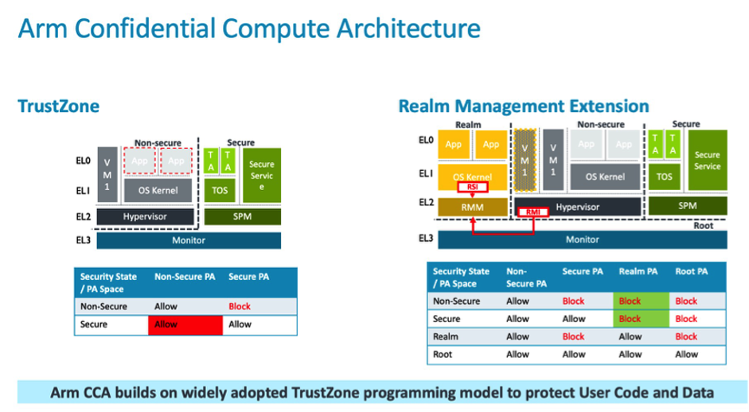

ARM CCA: Arm安全加密虚拟化技术
项目位置链接
Veracuz: https://github.com/veracruz-project/veracruz
VERAISON-VERificAtIon of atteStatiON: https://github.com/veraison/veraison
项目归属SIG
云原生机密计算SIG
技术自身介绍
问题&挑战
TrustZone是Arm为设备安全提供的一个安全架构，通过硬件隔离和权限分层的方式将系统内分为安全世界（Secure world）和正常世界（Normal / Non-Secure world）。
在安全环境中，通过底层硬件隔离，不同执行级别，安全鉴权方式等方式，从最根本的安全机制上提供基于信任根（Root of Trust）的可信执行环境TEE（Trusted Execution Environment）,通过可信服务（Trusted Services）接口与和通用环境REE（Rich Execution Environment）进行安全通信，可以保护TEE中的安全内容不能被非安全环境的任何软件，包括操作系统底层软件等所访问，窃取，篡改和伪造等。因此一些安全的私密数据，比如一些安全密钥，密码，指纹以及人脸数据等都是可以放在安全世界的数据区中进行保护。当前，Trustzone机制已经非常成熟稳定，并得到大规模的应用，并以开源的方式给业界提供实现参考。可以访问https://www.trustedfirmware.org/ 获取更多信息。
然而，TrustZone所提供的安全机制和TEE环境只能提供硬件级别的安全隔离。通常情况下，安全物理地址空间的内存在系统引导时静态分配，适用于数量有限的平台。对于大规模云服务器的机密计算，旨在允许任何第三方开发人员保护他们的虚拟机（VM）或应用程序，必须能够在运行时保护与VM或应用程序关联的任何内存，而不受限制或分割。
解决方案
Arm CCA引入了一种新的机密计算世界：机密领域（Realm）。在Arm CCA中，硬件扩展被称为Realm Management Extension (RME)，RME 会和被称之为机密领域管理监控器 (Realm Management Monitor, RMM)，用来控制机密领域的专用固件，及在 Exception level 3 中的 Monitor 代码交互。
Realm是一种Arm CCA环境，能被Normal world主机动态分配。主机是指能管理应用程序或虚拟机的监控软件。Realm及其所在平台的初始化状态都可以得到验证。这一过程使Realm的所有者能在向它提供任何机密前就建立信任。因此，Realm不必继承来自控制它的Non-secure hypervisor的信任。主机可以分配和管理资源配置,管理调度Realm虚拟机。然而，主机不可以监控或修改Realm执行的指令。在主机控制下，Realm可以被创建并被销毁。通过主机请求，可以增加或移除页面，这与hypervisor管理任何其他非机密虚拟机的操作方式类似。

Arm CCA技术能够从根本上解决用户敏感应用数据的安全计算问题。它充分利用软硬件实现的信任根提供的数据和程序的物理隔离、保护、通信和认证体系，并在传统TrustZone的基础上，增加了被称为领域（Realm）的隔离区域，从最底层的安全机制和原理上解决用户程序和数据的隔离需求。
当前应用情况
Realm内运行的代码将管理机密数据或运行机密算法，这些代码需要确保正在运行真正的Arm CCA平台，而不是冒充者。这些代码还需要知道自己已经被正确地加载，没有遭到篡改。并且，这些代码还需要知道整个平台或Realm并不处于可能导致机密泄露的调试状态。建立这种信任的过程被称为“证明”。ARM正在与包括机密计算联盟成员在内的主要行业合作伙伴合作，定义这一证明机制的属性，确保在不同的产品和设备上使用常见的平台真实性和来源方法。Arm主导的开源软件Veracuz是一个框架，用于在一组相互不信任的个人之间定义和部署协作的、保护隐私的计算；VERAISON-VERificAtIon of atteStatiON构建可用于证明验证服务的软件组件。
Armv9-A架构引入了Arm CCA的RME功能特性，采用对应架构的芯片也将拥有此项功能。此外，基于CCA的软件支持已经在虚拟硬件平台上进行开发、测试和验证，将在硬件设备问世的同时实现同步支持。更多信息，可以访问 https://arm.com/armcca 获取更多信息。